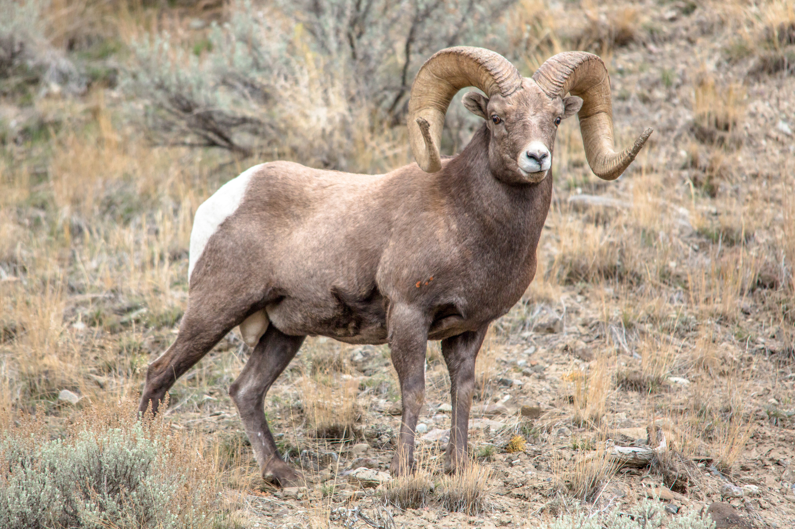
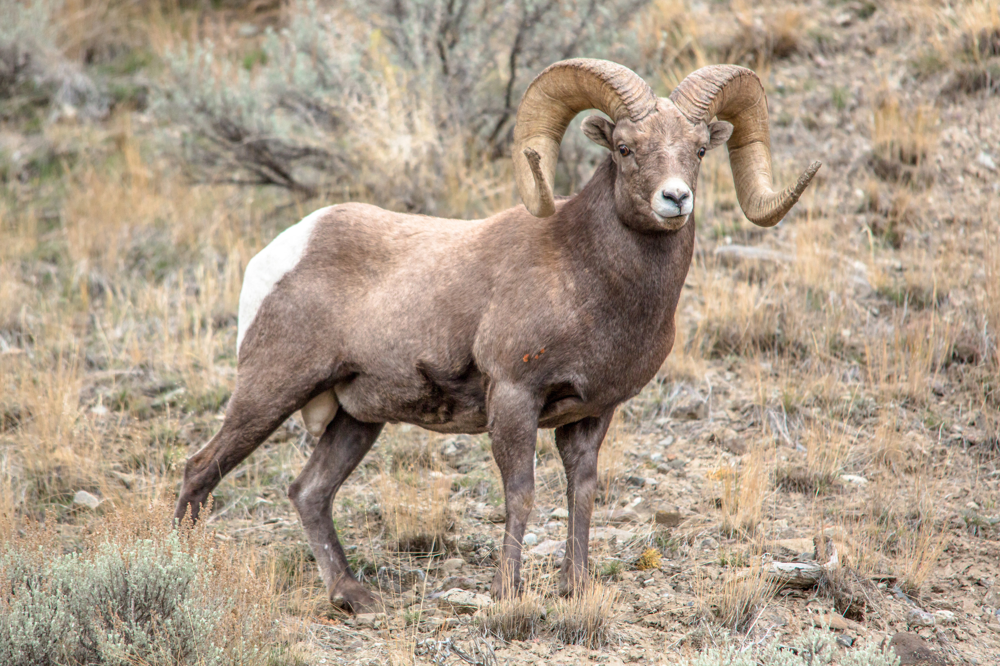
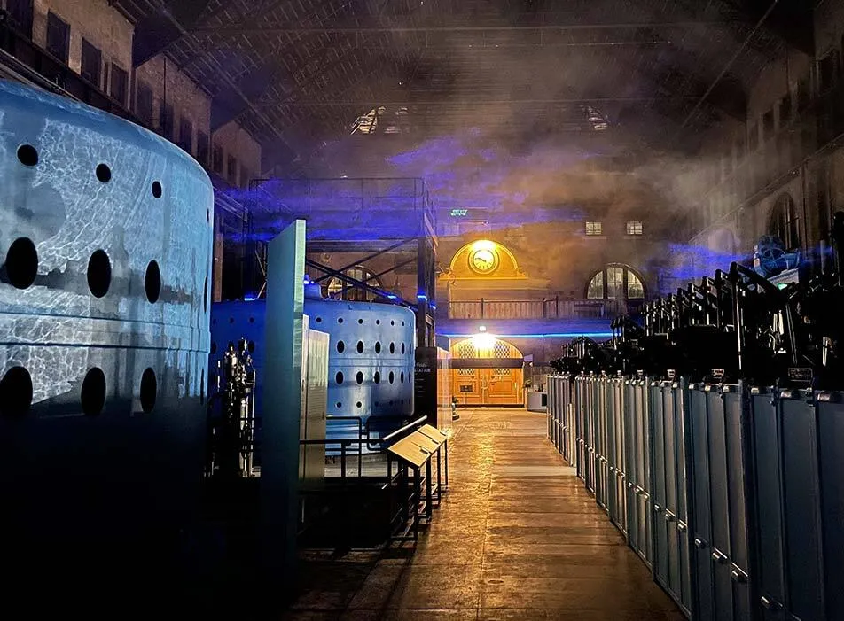
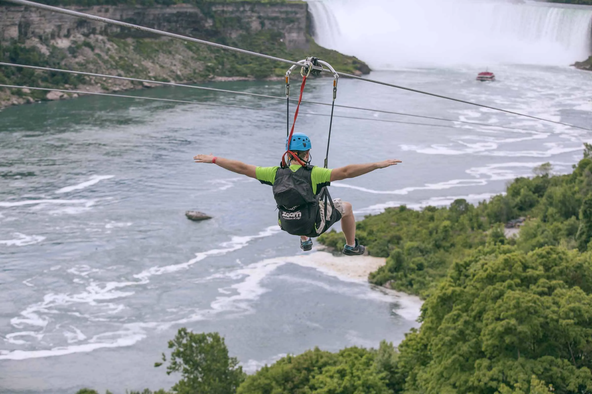
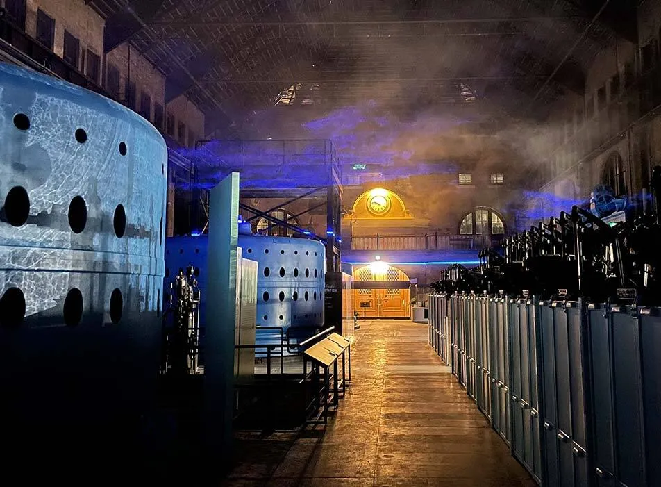
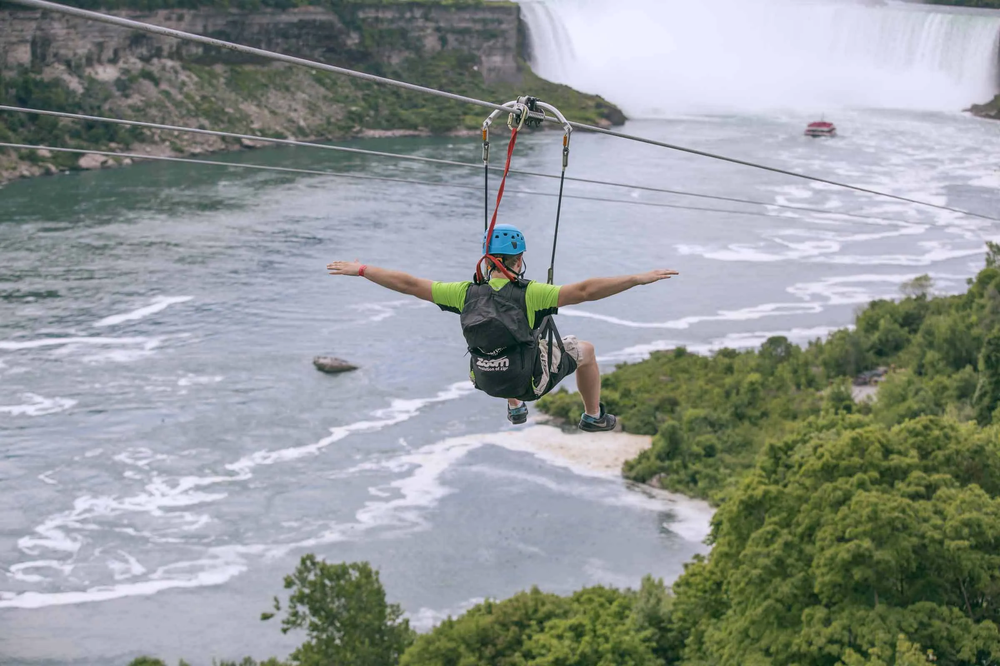
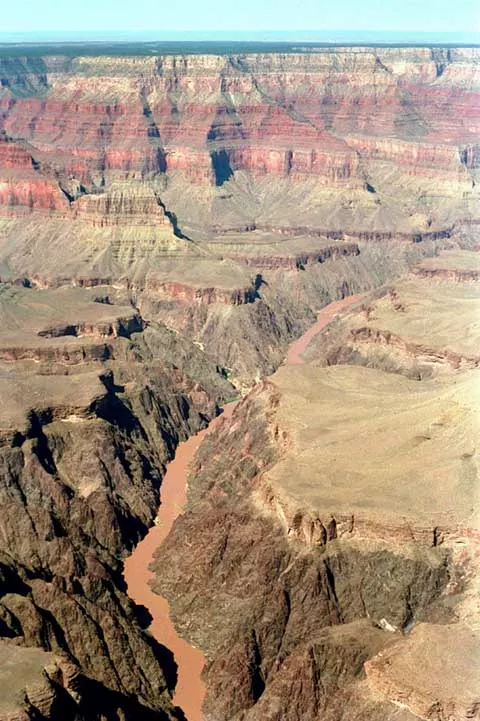
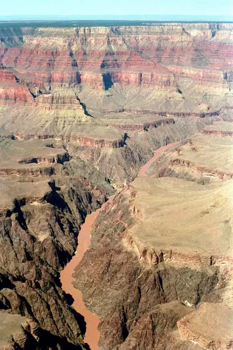
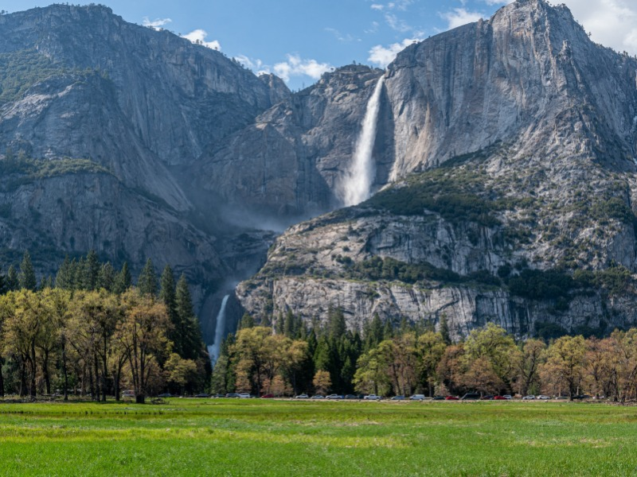
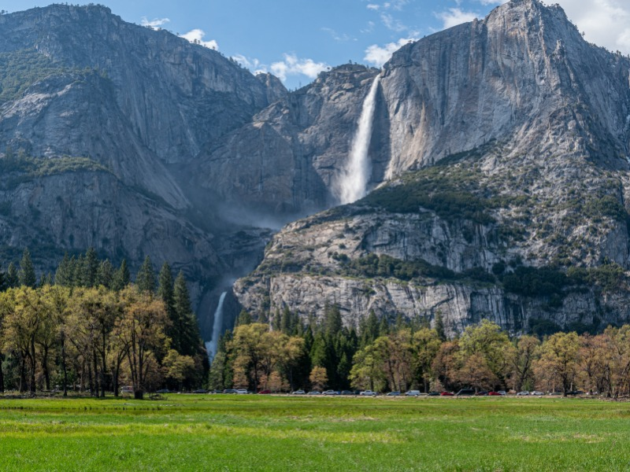

Yellowstone
Nestled in the rugged wilderness of the American West, Yellowstone National Park stands as a living testament
to the raw power and unparalleled beauty of the natural world. Established in 1872, it holds the distinction of
being the world's first national park, a title that only hints at the remarkable wonders it contains. Covering
over 2.2 million acres across the states of Wyoming, Montana, and Idaho, Yellowstone is a vast, untamed landscape
teeming with geothermal marvels, pristine lakes, towering waterfalls, and an incredible array of wildlife.
The park's geological features are a testament to its dynamic past, with bubbling geysers, steaming hot springs,
and the iconic Old Faithful geyser captivating the imagination of visitors from around the globe. Beyond its
geothermal wonders, Yellowstone offers a sanctuary for diverse ecosystems, from dense forests to sweeping
grasslands, where grizzly bears, wolves, bison, and elk roam freely.
To learn more details or inquire about
travel information, you can visit National Park Service
or Yellowstone Park
Yellowstone


 


Niagara Falls
Niagara Falls, one of the most iconic and awe-inspiring natural wonders on Earth, holds a special place in the hearts of
travelers and nature enthusiasts alike. Situated on the border between the United States and Canada, this
magnificent waterfall complex is a testament to the raw power and beauty of nature. Its thundering waters
and mist-shrouded cliffs have captivated the imaginations of millions, drawing visitors from across the globe
to witness its sheer grandeur.
To learn more details or inquire about travel information, you can visit
Niagara Parks or
Niagara Falls US Side Tickets
Niagara Falls


 



Grand Canyon
Nestled within the heart of the American Southwest, the Grand Canyon stands as a testament to the incredible
forces of nature that have shaped our planet over millions of years. This colossal chasm, one of the world's
most celebrated natural wonders, has earned its reputation for awe-inspiring grandeur and breathtaking beauty.
Carved by the mighty Colorado River over eons, the Grand Canyon is a geological marvel that showcases the Earth's
history in its stratified rock layers, each revealing a chapter in the story of our planet's evolution.
To learn more details or inquire about travel information, you can visit
National Park Service or
Grand Canyon Tours
Grand Canyon


 


Yosemite
Nestled amidst the majestic Sierra Nevada mountain range in California, Yosemite National Park beckons adventurers
and nature enthusiasts to explore its pristine wilderness.This remarkable natural sanctuary, often described as a
living masterpiece, is a testament to the unrivaled beauty and diversity of the American wilderness. Yosemite's
breathtaking landscapes are a harmonious blend of towering granite cliffs, lush valleys, cascading waterfalls, and
ancient forests, creating an environment that has captivated the hearts of countless visitors for generations.
To learn more details or inquire about travel information, you can visit
National Park Service or
Yosemite Travelling
Yosemite
 



Great Smoky Mountains
Nestled along the border of North Carolina and Tennessee, the Great Smoky Mountains National Park stands as
a testament to the astonishing beauty and biodiversity of the Appalachian region. This sprawling wilderness
area is renowned for its rolling, mist-shrouded peaks, lush forests, and a rich tapestry of life that
encompasses vibrant flora and fauna.The Great Smoky Mountains, often referred to simply as the Smokies,
owe their name to the ethereal mist that frequently veils their summits, creating an enchanting and almost
magical atmosphere. This national park is not only a haven for outdoor enthusiasts and hikers but also a
treasure trove of natural wonders, offering a glimpse into the unspoiled beauty of the Eastern United States.
To learn more details or inquire about travel information, you can visit
National Park Service or
The Great Smoky Mountains National Park
Great Smoky Mountains